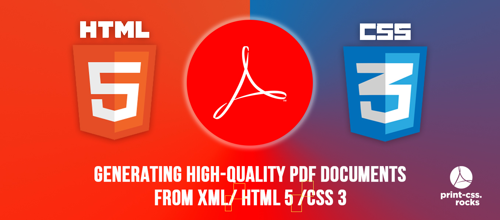
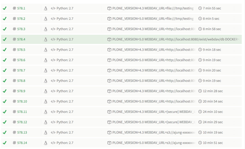

Plone 5 as foundation for XML Director Web-to-Print solutions
XML Director is an generic solution for building XML-based content management solutions based on the CMS Plone. This video shows how we build easy-to-use web-to-print applications using CSS Paged Media (XML/HTML for input, CSS for layout and styling). This demo features the PDFreactor PDF converter and the Nimbudocs WYSIWYG editor by RealObjects.
The migration of XML Director to Plone 5 is making big progress. As part of the ongoing effort I extended XML Director as web-to-print solution platform.
The following screencast shows how it is possible to use Plone 5 and XML Director as decent web-to-print application. The screencast shows to usecases:
- generation of PDF from a given HTML templates and CSS styles with form data filled through Plone. The input forms for each template are automatically generated from the HTML (with some additional metadata stored within the HTML, no need to create forms manually or individually). The generated PDF file is being stored automatically on the preconfigured storage (XML database, cloud storages, local filesystem).
- editing of the template using the Nimbudocs editor. The Nimbudocs Editor provides WYSIWYG editing of the template. The layout looks exactly the same as in the final PDF.

Our XML Director project now gained native support for Dropbox. "Native" means that you no longer need a third-party SaaS bridge like Otixo or StorageMadeEasy. Here is a quick and dirty screencast. This complements the storage story of Plone with external storage system. See my talk "Building bridges" given at Plone Conference 2015. The Dropbox driver for XML Director will be made available against a small fee in order to compensate the upfront cost for updating the low-level Dropbox driver for pyfilesystem.
Survey on integrations of third-party services, clouds, storages with Plone
Survey on integrations of third-party services, clouds, storages with Plone
I created a small suvery on integrating Plone with third-party services, storages and clouds.
URL: https://docs.google.com/forms/d/11A31lqYzlWaDUqVxD2VPeChlznfuJwSDzuzoqay0xCk/edit?usp=drive_web
print-css.rocks launched
A new website dedicated to PDF generation using the CSS Paged Media approach

Today we lauched a new website www.print-css.rocks soley dedicated to CSS Paged Media.
CSS Paged Media is an approach for generating high-quality PDF document from XML or HTML as input and CSS for styling and layout.
print-css.rocks is both a showcase and a tutorial for CSS Paged Media. In a growing number of lessons we show different features of CSS Paged Media and we learn how different converters behave with the same input.
CSS Paged Media workshop XML Prague 2016
Join me at the XML Prague 2016 conference for hands-on-training on generating high-quality PDF documents from XML/HTML.
I will attend the XML Prague 2016 conference from February 11th to 13th and give a hands-on-training on
CSS Paged Media and generating high-quality PDF documents from XML/HTML
The training will involve a lot of live coding in order to show you what you ask and what want to see.
The training material will evolve over the next few weeks in our public repository https://github.com/zopyx/css-paged-media-tutorial.
The training consists of two slots:
- slot one will teach you the CSS Paged Media basics
- slot two involves styling of a real world content document (HTML source with lots of chapters, images and tables)
Requirements
- Participants must have either PrinceXML 9/10 or PDFreactor 7/8 installed on their systems. Both converters are available for free for private or evaluation purposes. The trainer can assist you with the installation on Mac or Linux (not with Windows) but please make sure that you install the converter before the tutorial in order to safe time for the real cool stuff. We will eventually look at the new Vivliostyle Formatter.
- Particpants must have basic skills in HTML and CSS.
Trainer
Andreas Jung is working in the electronic publishing business for almost 20 years. Andreas is a Python & Plone freelancer, works on large internet and web applications, publishing solutions and funder of the Produce & Publish and XML Director projects.
Further information on CSS Paged Media
- http://www.w3.org/TR/css3-page/
- http://alistapart.com/article/building-books-with-css3
- http://www.smashingmagazine.com/2015/01/07/designing-for-print-with-css/
- http://www.techrepublic.com/blog/web-designer/introduction-to-the-paged-media-module-in-css3/
- http://de.slideshare.net/ajung/css-paged-media-a-review-of-tools-and-techniques
- https://www.youtube.com/watch?v=gEUnTWW2Lnw
Contact
XML Director 1.3 released
Version 1.3 features support for much more cloud storage types.
I am pleased to announce the release of XML-Director Version 1.3.
Version 1.3 now supports much more storage backends like finally the local filesystem, Amazon S3, Alfresco, Owncloud and third-party storage integrations like StorageMadeEasy and Otixo. In addition a huge amount of effort went into testing XML-Director against various storages. Each single source commit is directly tested against more than a hundred unittests running agains 14 different software and storage combinations.

As a side project we started to create a new REST API for XML-Director which will make much easier to interact with XML-Director from third-party applications. The near future vision is being able to talk from Microsoft Word through a plugin directly to XML-Director. Saving a Word document over XML-Director will directly store the DOCX file within the XML-Director CMS and trigger arbitrary conversions (XML/HTML transformations in the first place). Support for Indesign & Oyxgen XML Editor are planned. Because of the generic design of XML-Director we will be able to support arbitrary XML dialects from Docbook to DITA.
Official and final support for Plone 5 has been pushed back until the release of Plone 5.1 due to serious issues with the Plone 5 resource registries.
Merry Christmas everyone!
May the angle brackets with you!
XML Director 1.3 update
The "XML Director" add-on for Plone 4 and 5 allows you to mount external storage and web services into Plone using a unified approach and API. Many common protocols like WebDAV or S3 are supported out of the box. Services like Sharepoint, Evernote etc. can be connected with Plone through 3rd-party SaaS bridges.

At Plone Conference 2015 in Bucharest I presented the state of the XML Director project.
The upcoming version 1.3 will feature improved support for various external storages
- Alfresco
- Owncloud
- BaseX 8.3
- eXist-DB 2.2 and 3.0
- local filesystem
- all WebDAV based services
- Amazon AWS S3
- support for OTIXO and StorageMadeEasy SaaS bridges
A significant amout of efforts was invested into automatic interoperability tests with different backends. As outcome of these efforts we are now able to run the XML Director test suite (about 100 tests) against various backends (either running in Docker containers or available as external service) through Travis-CI - both for Plone 4.3 and Plone 5.0. So all code changes to XML Director will trigger 1400 tests against the various software and backend combinations.

The latest XML Director release (Version 1.3 beta 1) is available from PyPI
Open issues that must be solved for the final 1.3 release
- complete Plone 5.0 compatibility (JS and CSS integration)
- improved automatic UI tests (URL escape issues in particular related to the local filesystem integration)
Outlook
I had various discussions with people during the Plone Conference. The main topic was about a deeper integration into Plone (similar to Reflecto providing search integration through content proxies). In general I want to keep the current implementation small and minimal. I think that a deeper integration could be integrated as an layer on top. Necessary infrastructure in terms of notifications and hooks could be added in order to provide everything for higher level modules everything to make mounted content more usable and re-usable inside Plone. However a deeper integration into Plone must be well-thought since there a lot of edgecases to be considered. I am open for further discussions and suggestions...get in touch!
This is a followup posting to "Towards a generic integration of external data sources into Plone" that I wrote last year.
The key to mounting arbitrary filesystems (local and remote) into a Plone instance is my XML Director (xmldirector.plonecore) project. Don't be confused about the "XML" in the project but the project started as an integration solution for accessing XML databases from within Plone with a tight integration and access to Plone functionality. XML Director became very mature over the last month and works since some month smooth and without problems in production as part of the Onkopedia (www.onkopedia.com) project. The current release features support for accessing XML databases like eXistDB (2.2 and 3.0) and BaseX (8.2, 8.3). The integration is build on top of pyfilesystem which abstracts lots of different filesystem types and makes them accessible through a transparent and unified API. This means (in theory) that your code will run against a local filesystem in the same way as against S3 or a WebDAV server.
Levels of filesystem type integration with Plone
- "Mounting" - an arbitrary filesystem can be mounted into Plone (very similar to Reflecto). A persistent "connector" object in Plone represents a mount point. You can use URL traversal through the "connector" object for accessing resources on the other filesystem
- "Dexterity" - support for storing Dexterity values per-field on an a different filesystem (other than the ZODB). This mode uses its own directory layout on the other filesystem (which does not reflect any hierarchy aspect of Plone)
XML Director will see a new major release very soon that will extend the list of supported filesystems.
Current status
- eXistdB (2.2, 3.0): fully supported, running production
- BaseX (8.3): fully supported, running production
Under development
- support for local filesystem access (similar to Reflecto): almost working
- Owncloud: almost working
- Dropbox: almost working (using DropDAV bridge)
- Dropbox: testing phase (via native Dropbox Python driver for pyfilesystem)
- AWS S3: under consideration, partly working
- FTP/SFTP: under consideration, partly working
Quality assurance
XML Director has a huge testsuite of over 100 tests that are used to check the functionality of XML Director against all support filesystem types. A general problem that must be addressed in some way are encoded filenames. Many filesystem types support UTF-8 encoded filenames, others only support ASCII. The problem becomes even more complicated with different filesystem encodings on the host running Plone and of course the local filesystem (if you upload files from your local computer). XML Director is fully supported for Plone 4.3. Full support for Plone 5.0 is very close (some JS/CSS registry issues remaining).
collective.elasticindex: Plone integration with Elasticsearch
A better fulltext search for Plone based on Elasticsearch
Over the last few weeks I had been working on a new enhanced version of collective.elasticindex. collective.elasticindex was originally written and maintained by Infrae.
A better fulltext search in Plone was always demanded by customers of the last years. TextIndexNG3 solved this problem for a long time. However no solution is perfect and every software has its time. So it was straight forward moving forward to Elasticsearch.
Why not Solr? ...too boring...uses XML...not sexy enough. Elasticsearch in general has a lot of momentum right now and is easier to setup and maintain.
We extended collective.elasticindex in the following ways
- unified livesearch and extended user interface
- much better support for multi-lingual content by applying language specific analyzers to content and queries
- configurable search results template (based on client-side Javascript templates implemented on top of Markup.js)
- better configuration options of the language specific aspects
- support Plone 4.3 (Plone 5.0 support should also work soon..some issues with the Plone legacy bundle handling in Plone 5)
Limitations
- Plone 5.0 support should also work soon..some issues with the Plone legacy bundle handling in Plone 5
- Requires Elasticsearch 1.6.X for now. Elasticsearch support 2.0 requires an updated very of pyes which does not deal very well with changes in the error messages of Elasticsearch 2.0
Limitations
- collective.elasticindex is currently available from Bitbucket (https://bitbucket.org/dasgehirn/collective.elasticindex) in beta quality...there is a bunch of cleanup to be done.
Many thanks to Infrae for building the first version of collective.elasticindex.
Converting DITA to PDF using CSS Paged Media
Alternative approaches for the PDF generation from DITA maps.

Historically PDF conversion of DITA content is closely tied to XSL-FO. However there are alternative ways to get from DITA to PDF. The classic XML addicted will likely disagree but going from DITA XML to PDF through CSS Paged Media appears more reasonable and much easier. The first step is to generate a single-source (X)HTML file form a DITA map.
This can be done by either the DITA Open Toolkit
dita -f html5 -i my.ditamap -o out/my.html -Droot-chunk-override=to-content
or the XMLMIND DITA converter (DITAC)
ditac -c single -f xhtml my.html my.ditamap
Now you can process the HTML file using one of the a PDF converter like PrinceXML or PDFreactor:
pdfreactor -s mystyles.css my.html my.pdf
prince -s mystyles.css my.html my.pdf
All DITA class and outputclass attributes are carried forward into the HTML markup. This will make it easy to write specific CSS styles that match related DITA elements, topics or whatever.
Benefits
- no XSL-FO needed
- all styling and layout accomplished by CSS
- easy integration of third-party Javascript module when needed
- less complexity, no XSL-FO expert needed
- reduced costs (cheaper converters, no XSL-FO guru needed)
- similar quality as with FO
- taking advantage of modern CSS features like CSS transformations etc.
Resources
- Publishing with CSS Paged Media – A review of existing tools and techniques (Slides, XML Prague talk)
Contact
- Andreas Jung (info@zopyx.com)